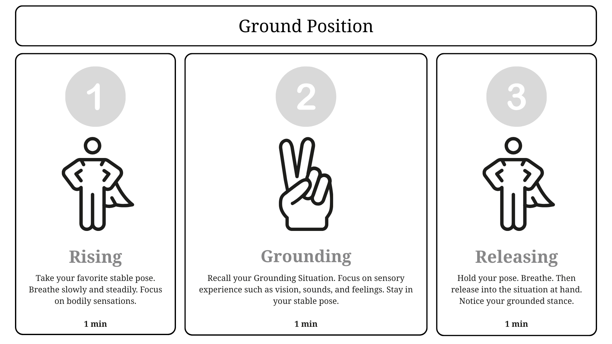

Innovation comes from individuals with unique insight. We call them Curious Minds. They are driven by a deep desire to make sense of the world, to see things earlier, differently, and with greater nuance. Often, they combine high cognitive ability with hyperfocus and emotional sensitivity, along with the challenges that can accompany them.
You'll find them among pioneers, founders, researchers, artists, entrepreneurs, tech nerds, and all those adventurous places curious people are drawn to. Some Curious Minds rise to the very top of personal, social, and financial success. They are among the first to spot systemic dysfunction, anticipate ethical collapse, and envision solutions to our most pressing problems. They believe the world can and should change for the better, but often lack the tools to lead that change.
Standard self-leadership advice simply isn’t designed for Curious Minds. It often makes them feel they need to fit in, when in fact they should listen more to their inner voices. We acknowledge their role as creatives and innovators who are wired differently. The systemic rejection they often face is a natural reaction to innovation. It’s a feature of the status quo - a system reacting to novelty. Curious minds are wired to be different. And for good reason.
The research is alarming. More than 70% of entrepreneurs and creatives report mental health challenges, and half of all entrepreneurs experience burnout.
Being curious and having seen some of the upsides and struggles ourselves, we aim to create the tools Curious Minds need to thrive in a world not always ready to embrace their uniqueness.
The good news are that way over 30% of Curious Minds may have the capacity to help. Since you followed your curiosity this far, you might be one of those who can and want to help, be it as a coach, contributor, or simply by donating a small amount to help us reach our first milestone.
We provide actionable, open-source leadership tools to help healthy and Curious Minds thrive without self-sabotage. We do so by acknowledging their role as creatives and innovators wired to be different. Rejection isn’t a flaw; it’s a system reacting to novelty. Curious Minds are not flawed. They are wired to be different.
As George Bernard Shaw put it: “The reasonable man adapts himself to the world; the unreasonable one persists in trying to adapt the world to himself. Therefore, all progress depends on the unreasonable man.”
We are not here to fix Curious Minds. What is not broken does not need fixing. We are not here to fix the system. We acknowledge rejection, tension and friction as natural reactions to novelty. We do not provide medical or psychological advice. If you need personalized support, please consult a licensed therapist, psychologist, psychiatrist, or medical doctor. In urgent situations, contact a crisis hotline or emergency services.
Instead, we equip Curious Minds with the tools they need to thrive in a system they are meant to disrupt and renew. We help them embody the change they want to see in the world and focus their energy where they can maximize their impact.
Have you ever felt overwhelmed or unprepared for what lies ahead? Try The Ground Position, the foundational exercise of Healthy Leadership. It helps nurture a stable inner stance and build resilience when circumstances radiate stress.
Alternatively, explore The Circle of Influence. Learn how to focus your energy rather than let it scatter. This is especially useful when you find yourself navigating a polycrisis, juggling everyday performance demands, and managing a declining energy level.
Check out the preview of our first publication and try our exercises.
We create open source leadership publications, tools, and games. We believe in open knowledge and are committed to keeping our resources open source and free, ensuring maximum accessibility for Curious Minds and their support systems.
Equally important, your funding helps launch HealthyLeadership.Cafe, an online community for Curious Minds featuring regular events, guest speakers, and meaningful discussions. It exists not only to help Curious Minds excel, but also to build community and shine a light on a crisis that too often goes unseen.
Your support goes beyond funding development; it signals that you care and enables us to direct resources where they will have the greatest impact.
And your impact goes even further:
Up to €5,000, Silicon.Garden, the operator behind this initiative, will match every euro donated. All contributions go directly into funding the initiative. By helping Curious Minds thrive as innovators, you are contributing to a healthier future for all of us.
Do not just donate. Double your impact. Help us reach our goal and equip Curious Minds with the tools to lead without self-harm. Your €10 becomes €20 today.
Early supporters will receive a special place in our Hall of Fame and, more importantly, in our very hearts.
The system fails to support the curious minds who drive change. The rebel kids. The thinkers. The ones that don’t fit in.
The world needs their brilliance, but their silent struggles hold them back.
We are shifting the focus from fixing a deficit to cultivating a strength and equip Curious Minds with the self-coaching and leadership tools they need.
Identify and name your unique profile before seeking external professional help, reducing the risk of misdiagnosis.
Learn practical skills to navigate high-IQ/high-empathy profiles, preventing pitfalls like self-rejection or drugs, causing depression and isolation.
We provide open-source resources for individuals, coaches, and organizations worldwide to foster better environments for Curious Minds.
We believe in the power of open knowledge and are fully committed to it. Download a preview of our first open-source knowledge seed here. More will follow.
This knowledge seed focuses on self-perception and self-leadership. The module includes a practical exercise called "Ground Position," which helps cultivate a balanced emotional inner state. This reliable inner safe space is essential for leading in a healthy and effective way.
*Preview Version 0.99 • 1MB • PDF Format
Download the “Ground Position” exercise for practical first steps in building a strong foundation for Healthy Leadership. We recommend reading Seed One first. Grounded in research on psychological safety, neuroplasticity, neurodiversity, and systems thinking.

Download ExerciseWe build open-source tools and publications, released under Creative Commons licensing for maximum accessibility and community impact.
We are building a systemic solution that scales. Your generous donation powers these stages.
Turn the preview into a professional digital publication, launch the core website, and produce an awareness video.
Develop the first self-paced online course with experts. Structured tools to move from distress to healthy leadership.
Finalize all core Self-Coaching Guides and resources for stage one, ready for open-source Creative Commons distribution. Formal establishing of not-for-profit organization.
Development of the first game app prototype focused on self-perception and leadership for teenagers and young adults.
Create materials for HR/Leadership teams to foster supportive environments for Curious Minds.
Help us give them the tools and community they need to thrive.
Early supporters will receive a lifetime honourable mention in our virtual Hall of Fame. Cannot support at the moment but love the mission? Donate a symbolic 50 Cent so we know you care. (Includes electronic receipt; personal donations may not be tax-deductible in your country)
Earn a place in the sponsors section of our website and be among the first to receive new materials (invoice with VAT incl.)
Friends and Supporters,
After more than a decade of helping some of the brightest minds in tech thrive as innovators, entrepreneurs and managers, we’ve come to know the challenges of Curious Minds intimately. The system often works against their mental health—and we’re bold enough to believe we can change that.
Not by changing the system itself, but by equipping Curious Minds with the tools they need to truly thrive. Our own curiosity has taken us to many different places, and we'd love to continue sharing our experiences in scalable, not-for-profit ways in HealthyLeadership.Cafe.
Your support means a lot to us.
Thank you for your trust.
Michael Laussegger & Gitte Klitgaard
PS: No amount is too small. Every contribution tells us that you care and want us to move this initiative forward.